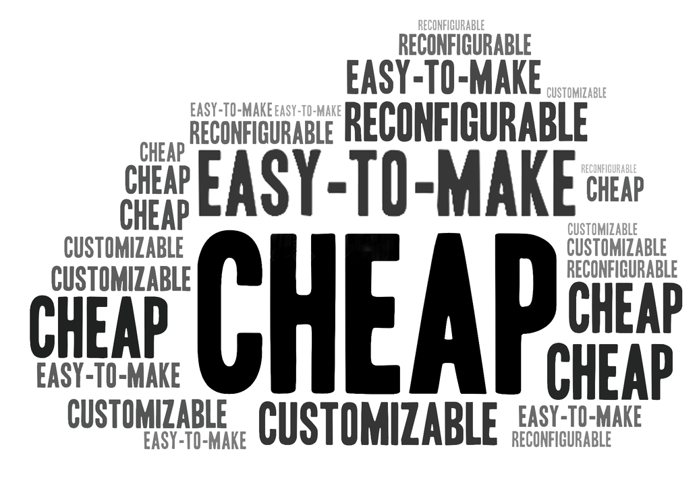

MagPaper
Cheap, Customizable and Reconfigurable Rapid Prototyping of Haptic Interface Based on Paper
Nov 2022 - Dec 2022
Personal project completed at Zhejiang University
BACKGROUND
Haptic Feedback: Important yet Ignored in Prototyping
importance
Haptics is crucial in physical interface interactions, because this sense facilitates task performance and contributes to the satisfaction of experiences, etc. [4]
challenge
However, it is challenging and complicated to design for haptics [1], and thus haptic feedback is often ignored in tangible demos.
USER RESEARCH
Who Need to Prototype with Haptic Feedback?
In a survey of designers of different ages and backgrounds, I found student industrial designers are suitably potential target users.
do they need haptic prototyping?
2 in 5
courses per semester have a tangible prototype project
3 in 4
students think that haptic feedback is important in their projects.
can they include haptics in demos now?
8 in 10
students in a 3-week Arduino tangible prototype workshop do not incorporate haptics because they think it is "challenging" and "time-consuming"
conclusion
Student industrial designers often work at the intersection of tangible interaction and industrial design, and they often find it challenging to design haptics despite its importance. Therefore they could be the potential user group.
Their Requirements of the Haptics Design?
I conducted further interviews with 12 students from design related majors. (8 undergraduates, 4 graduate students)
desirable haptic prototype features?
*reconfigurable: provide various haptic feedback with the same gadget
**data from interview discourse texts
type of haptics usually needed?
they usually need haptics in physical inputs with interaction purposes (e.g. buttons, switches, etc.)
access to prototyping equipments?
66%
of students mentions that they cannot easily use some expensive prototype machines such as 3d printers, laser cutters, CNC machines, etc.
conclusion
Student industrial designers usually need haptics in physical inputs, with following features:
cheap
no need for costly machine
customizable
easy to make
high affordance
reconfigurable
Problem Statement
Student industrial designers usually need haptics in physical inputs, with following features:
CURRENT SOLUTIONS
There are many low-tech-threshold rapid prototyping methods of creating haptic feelings for hand interactions on physical interfaces, but none of them can meet all the reuirements from the research.
Shape-Haptics [1]
require laser-cutter
üß≤ Magnetic-Feedback [2]
require 3d printer
Pneumatic Controls [3]
require 3d printer
üß≤ Mechamagnets [4]
require 3d printer
üß≤ Magnetact [5]
lack customizability
üß≤ Bump ahead [6]
only silde interaction
üß≤: use magnets to provide haptic feedback
Insight
Magnetism is used by many of the above rapid-designing method of haptic feelings of tangible interfaces and features cheap, easy to fabricate, etc.
Opportunity
Based on magnetism, design an easy-to-fabricate, cheap, customizable, and reconfigurable physical interface toolkit with haptic feedback and high affordance.
BRAINSTORMING
I love to explore the potential of new materials, therefore first I looked into one promising material for magnetic haptic interfaces: magnetic elastomers. [7]
Introducing Magnetic Elastomer (ME)
why magnetic elastomers (ME)?
ME consists of elastomer and magnetizable particles, which is cheap and easy to make. Its mechanical properties can also be controlled by the external magnetic field, thus reconfigurable.
cheap
easy to make
reconfigurable
how to fabricate?
The fabrication process is easy and cheap. ⬇️
For magnetizable particles, I choose Fe and Fe3O4 for further testing because they are cheaper.

how to use?
I applied the material onto different substrates, which will lead to different properties.
Paper
slightly rigid
easy to fold
PLA Plastic
loose bonding
inflatable
Gauze
soft
easy to bend, twist .etc
Solution1: ME + Plastic
ME and plastic is a classic bilayer combination which can be inflated. Using the inflated air and magnetic attraction, some haptic feeling can possibly be simulated.
challenge
The PLA plastic base still need to be 3d-printed, and the haptic feedback is weak.
Solution2: ME + Paper (magnetized)
Paper is a cheap and interesting candidate for substrate because it gives the elastomer rigidity so that it can be reshaped by folding. [7]
challenge
Magnetizing the origami structure is difficult, and requires expensive equipments.
⭐️ Solution3: ME + Paper (unmagnetized)
Hard as the elastomer is to be magnetized, it can still be attracted by the magnet. Thus I wondered if this force can be used for haptic feedback.
challenge
The attraction force can be weak because while a pair of magnets can attract each other, the elastomer can only be attracted by the magnet, resulting in the reduction of half of the force.
solution
Consequently, I tested different materials and their proportions to maximize this force feedback.
DESIGN
Introducing the MagPaper
The MagPaper is a rich interaction toolkit with haptic feedback using magnetic elastomers that can be cheap and easy fabricated.
how to design?
I designed a website, where various kinds of haptic component prefabs are available. Designers can also upload their own designs and simulate haptic feedback online.
how to fabricate?
The fabrication process features easy, customizable and cheap.

Here is a video demonstration of the fabrication process.
Feature 1: High Affordance
MagPaper can be cut & folded into various shapes, and icons signaling functions can also be printed on it. Therefore, designers can tailor components with high visual affordance.
Here is an example of Todo List made by the MagPaper.
Feature 2: Customizable
Using MagPaper, designers can customize nearly any kind of interaction component with haptic feedback. Here are examples of some commonly used components.
Here is a video demonstration of how to interact with several components. You can turn on the sound to "hear" the haptic feedback.
Feature 3: Reconfigurable
With different strengths and kinds of external magnetic fields, the haptic feedback of MagPaper components are highly reconfigurable.
haptic curve
Different magnetic field intensity will result in various haptic feelings.
haptic interaction logic
Different magnetic fields can result in diverse logic even for the same component, leading to different haptic feelings.
haptic state indicator
Different magnetic fields can result in diverse logic even for the same component, leading to different haptic feelings.
conclusion
Student industrial designers usually need haptics in physical inputs, with following features:
cheap
no need for costly machine
customizable
easy to make
high affordance
reconfigurable
APPLICATION
Interactive Joystick
The joystick can be used to provide clike-like haptic feeling of four dimensions.
The reconfigurability can also simulate physical properties of virtual objects.
Interactive Book
MagPaper can easily be used to make components with high affordance.
friction feedback slider
paper light switch
Crocodile Toy
MagPaper could also be used for actuation, which can be easily compatible with prototype tools like the Arduino.
REFERENCES
[1] Zheng, C. et al. (2022) “Shape-haptics: Planar & Passive Force Feedback mechanisms for physical interfaces,” CHI Conference on Human Factors in Computing Systems [Preprint]. Available at: https://doi.org/10.1145/3491102.3501829.
[2] Ogata, M. and Koyama, Y. (2021) “A computational approach to magnetic force feedback design,” Proceedings of the 2021 CHI Conference on Human Factors in Computing Systems [Preprint]. Available at: https://doi.org/10.1145/3411764.3445631.
[3] Vázquez, M. et al. (2015) “3D printing pneumatic device controls with variable activation force capabilities,” Proceedings of the 33rd Annual ACM Conference on Human Factors in Computing Systems [Preprint]. Available at: https://doi.org/10.1145/2702123.2702569.
[4] Zheng, C. et al. (2019) “Mechamagnets,” Proceedings of the Thirteenth International Conference on Tangible, Embedded, and Embodied Interaction [Preprint]. Available at: https://doi.org/10.1145/3294109.3295622.
[5] Yasu, K. (2019) “Magnetact,” Proceedings of the 2019 CHI Conference on Human Factors in Computing Systems [Preprint]. Available at: https://doi.org/10.1145/3290605.3300470.
[6] Yasu, K. and Katsumoto, Y. (2015) “Bump ahead,” SIGGRAPH Asia 2015 Emerging Technologies [Preprint]. Available at: https://doi.org/10.1145/2818466.2818478.
[7] Yi, S. et al. (2022) “High-throughput fabrication of soft magneto-origami machines,” Nature Communications, 13(1). Available at: https://doi.org/10.1038/s41467-022-31900-5.